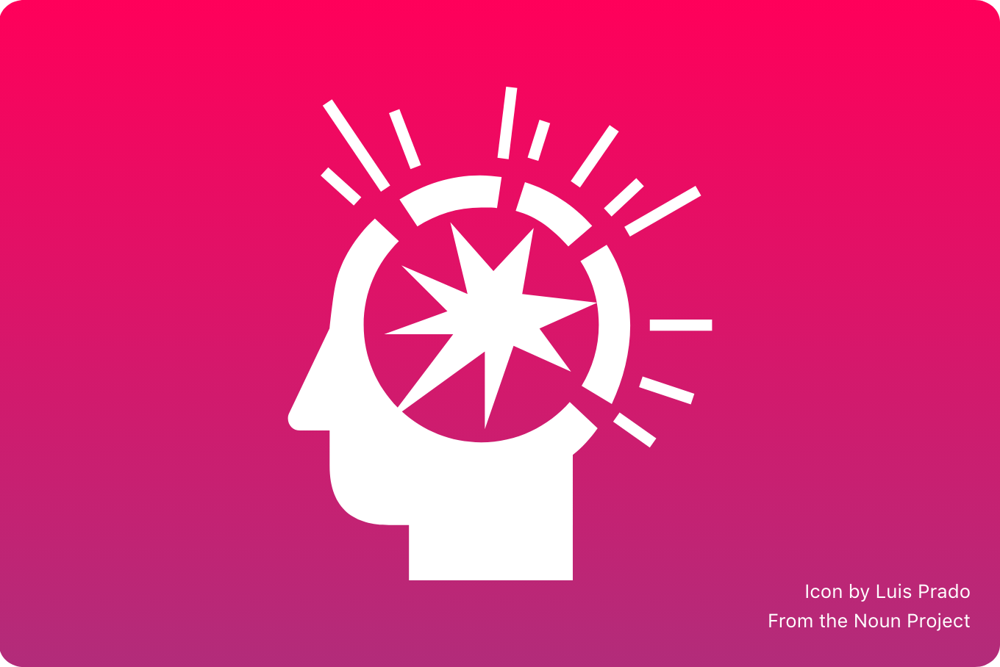

Challenges
There was turmoil due to the replacement of most of the C suite.
I saw the crisis as an opportunity to propose a new way for the UX design philosophy.
The main change that needed to get across was from a single fixed design across all clients, to the simplicity and leverage of the native platforms.

The design team from then on was integrated by the PM team.
Being close to the PM team can help to gain insights on the business problem from the ground up.
The amount of information can also be challenging due to numerous projects, problems, and overall queries that the PM team receives on a daily basis.
The ratio of PM and Engineers to designers was overwhelming
Simplicity is the best friend when trying to work with multiple teams building in different platforms at the same time.
Communication and a good partnership with the engineering team help to identify the components that can be used out of the box, and those that need modifications to fit within the style.
